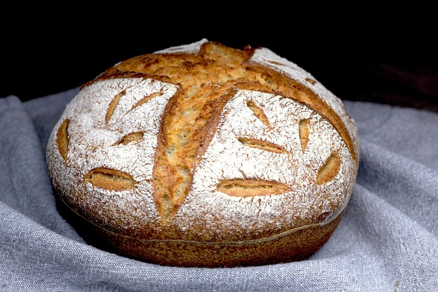

Homemade Sourdough Bread

Fresh sourdough bread made from the comfort of your kitchen!
There's something incredibly comforting and fulfilling about the process of making sourdough bread from scratch. As a housewife,
I find solace in the rhythmic kneading of the dough, the earthy aroma that fills the kitchen,
and the anticipation of that perfectly golden crust emerging from the oven. This age-old tradition,
passed down from my mother, connects me not only to my family's heritage but also to a slower, more intentional way of living.
In a world filled with fast food and instant gratification, taking the time to nurture a sourdough starter and patiently wait
for the dough to rise teaches us the value of patience and dedication. So, let's embark on this wholesome journey together as I
share with you my mother's cherished recipe for homemade sourdough bread.
As we dive into the recipe, it's essential to understand that making sourdough bread is as much about intuition as it is
about following instructions. Each step is a labor of love, from feeding the sourdough starter to gently shaping the dough
into loaves. The beauty of this recipe lies not only in its simplicity but also in its adaptability. Whether you're a
seasoned baker or just starting your bread-making journey, I encourage you to embrace the process and allow yourself to
experiment with flavors and techniques. So, roll up your sleeves, dust off your apron, and let's get started on crafting
a loaf of sourdough bread that will not only nourish the body but also feed the soul.
Ingredients:
- 150g/5.35oz active sourdough starter
- 150g/8oz warm filtered water
- 25g/.90oz olive oil
- 500g/17.65oz bread flour
- 10g/.4oz sea salt
- fine ground cornmeal, for dusting
Steps:
- Activate Your Starter:
Make sure your sourdough starter is active. If it's been in the fridge,
take it out and let it come to room temperature. Feed it with equal parts
flour and water, and let it sit at room temperature for 4-6 hours until
it's bubbly and active.
- Mix Ingredients:
In a large mixing bowl, combine the active sourdough starter, warm filtered
water, and olive oil. Stir until well mixed.
- Add Flour and Salt:
Add the bread flour and sea salt to the bowl. Mix until a shaggy dough forms.
- Knead the Dough:
Lightly flour a clean surface and turn the dough out onto it. Knead the dough
for about 10 minutes until it becomes smooth and elastic.
- First Rise:
Place the dough back into the mixing bowl and cover it with a clean
kitchen towel or plastic wrap. Let it rise at room temperature for about
4-6 hours, or until it has doubled in size. You can also let it rise in
the refrigerator overnight for a slower fermentation and enhanced flavor.
- Shape the Dough:
Once the dough has doubled in size, gently deflate it and shape it into a
round or oval loaf. You can do this by folding the edges of the dough towards
the center and then flipping it over so the seam side is down.
- Second Rise:
Place the shaped dough onto a baking sheet lined with parchment paper or
a floured surface. Cover it with a clean kitchen towel and let it rise for
another 2-3 hours, or until it's puffy and almost doubled in size.
- Preheat Oven:
About 30 minutes before the dough is done with its second rise, preheat your
oven to 450°F (230°C). Place an empty baking dish on the bottom rack of the oven.
- Score the Dough:
Using a sharp knife or razor blade, make shallow cuts (score) on the surface of
the dough. This helps the bread expand properly in the oven.
- Bake:
Just before putting the bread in the oven, dust the surface with fine ground
cornmeal. This will give the crust a nice texture. Place the bread in the oven
and pour some hot water into the empty baking dish to create steam. Bake for
25-30 minutes, or until the crust is golden brown and the bread sounds hollow
when tapped on the bottom.
- Cool and Enjoy:
Once baked, transfer the bread to a wire rack and let it cool completely
before slicing. Enjoy your homemade sourdough bread with your favorite spreads or toppings!